Yoko Ono, A Piece of Sky (2019). © Art-19 GmbH.
The limited-edition prints will be available for purchase beginning on December 1.
Caroline Goldstein, November 25, 2019
Want to buy artwork by internationally acclaimed artists and help save the world at the same time? Now you can, thanks to a partnership between Amnesty International and the arts initiative Art-19.
The collaboration has yielded “Art 19–Box One,” a limited-edition set of 10 signed prints by acclaimed artists including Gerhard Richter and Shirin Neshat. The 100-edition run goes on sale December 1 for €50,000 (about $55,000) each—just in time for the holidays.
Art-19 is an artist-run organization founded by gallerist and master printer Mike Karstens; Burkhard Richter, a retired commercial lawyer and art advisor; Bill Shipsey, the founder of Art for Amnesty; and Jochen M. Wilms, a Berlin-based art project producer. The name of the group references Article 19 of the Universal Declaration of Human Rights, which reads in part, “Everyone has the right to a freedom of opinion and expression.”
The combination of law experience and fine-art contacts has brought together an impressive roster of 10 international artists who created original work for the project: In addition to Neshat and Richter, the lineup includes Ayşe Erkmen, Shilpa Gupta, Ilya & Emilia Kabakov, William Kentridge, Yoko Ono, Chiharu Shiota, Kiki Smith, and Rosemarie Trockel. (Notably, many of these artists’ works would be difficult to acquire through traditional channels, as they are so sought-after.)
Karstens has worked with a number of the participating artists in the past, most notably with German art star Gerhard Richter to create a series of stained glass windows at the Cologne Cathedral.
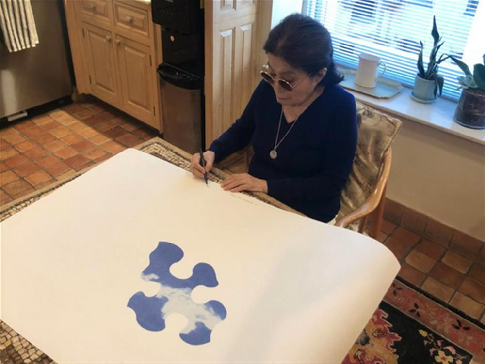
Making of Yoko Ono’s A Piece of Sky (2019). © Art-19 GmbH.
In a press announcement for Box One, the artists weighed in on their contributions. “Freedom of expression is naturally dear to my heart and a fundamental and essential right—especially for artists,” said Yoko Ono, who has been a member of Amnesty International for more than two decades. “Please support this important artistic endeavor.”
Ono’s contribution, A Piece of the Sky, echoes her longtime fascination the the sky motif as a metaphor for peace and freedom; in this print, the shape of a puzzle piece is colored with white clouds against a blue background.
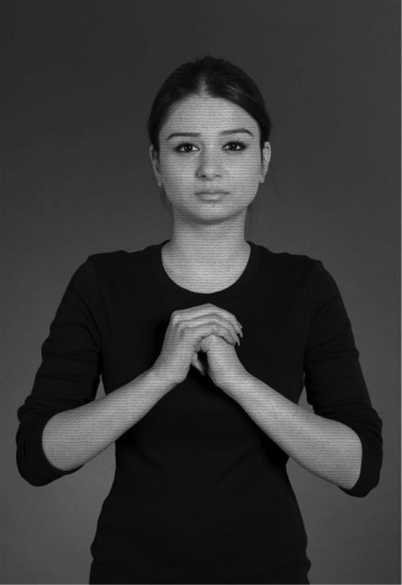
Shirin Neshat, from “The Home of My Eyes” series (2015–19). © Art-19 GmbH.
Shirin Neshat, who contributed a photograph from her “The Home of My Eyes” series, a group of portraits of individuals from her native Iran inscribed with ink, added: “Being born an Iranian, a country that has undermined basic human rights particularly since the Islamic Revolution, I have uncontrollably gravitated toward making art that is concerned with issues of tyranny, dictatorship, oppression, and political injustice. Although I don’t consider myself an activist, I believe my art regardless of its nature, is an expression of protest, and a cry for humanity.”
The works will be exhibited in a traveling show across four European cities beginning December 10, Human Rights Day. The are available for purchase online.
See works from the project along with behind-the-scenes photos from the printing process, below. The exhibition will be on view at Collectors Room in Berlin, December 10–January 31, 2020; at Blondeau & Cie in Geneva, December 12–14; the DOX Centre for Contemporary Art in Prague, December 13, 2019–February 3, 2020; and for one day at Paris’s Grand Palais, on December 14.
Gerhard Richter, Cut (2018). © Art-19 GmbH.
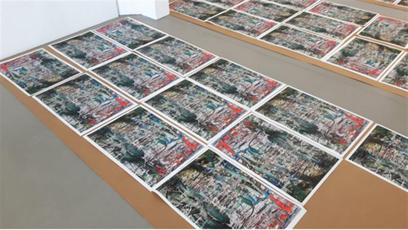
Making of Art-19 Box One, Gerhard Richter’s Cut (2019). © Art-19 GmbH.
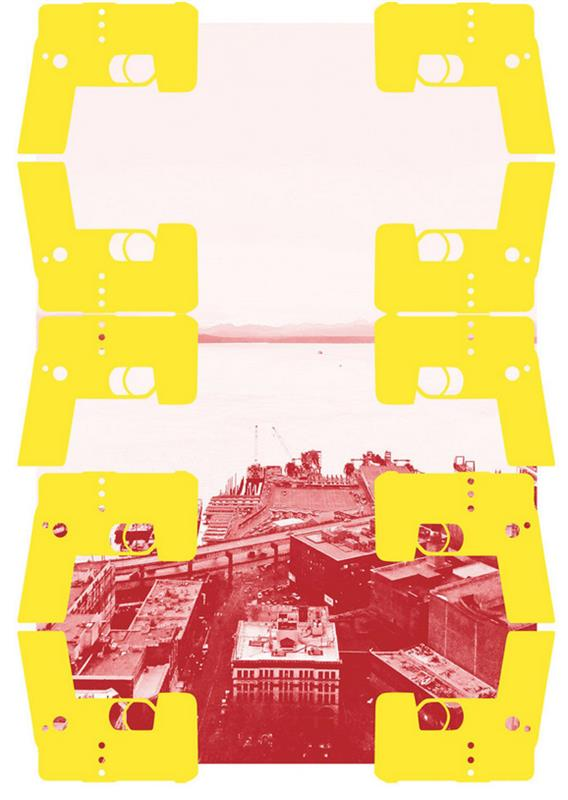
Rosemarie Trockel, Film Muet (2019). © Art-19 GmbH.
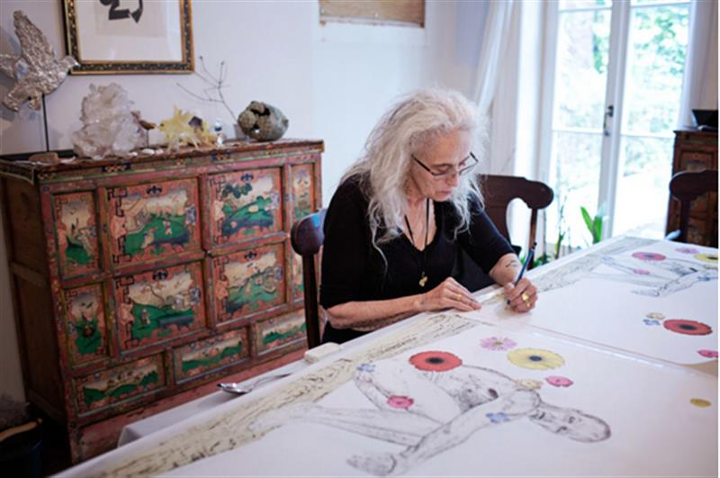
Making of Art-19 Box One, Kiki Smith’s Flowers in the Sky (2019). © Art-19 GmbH.
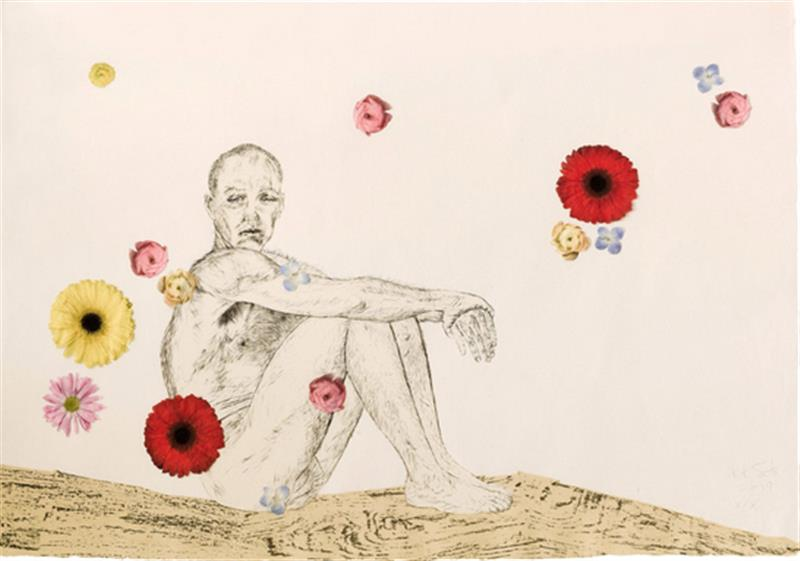
Kiki Smith, Flowers in the Sky (2019). © Art-19 GmbH.
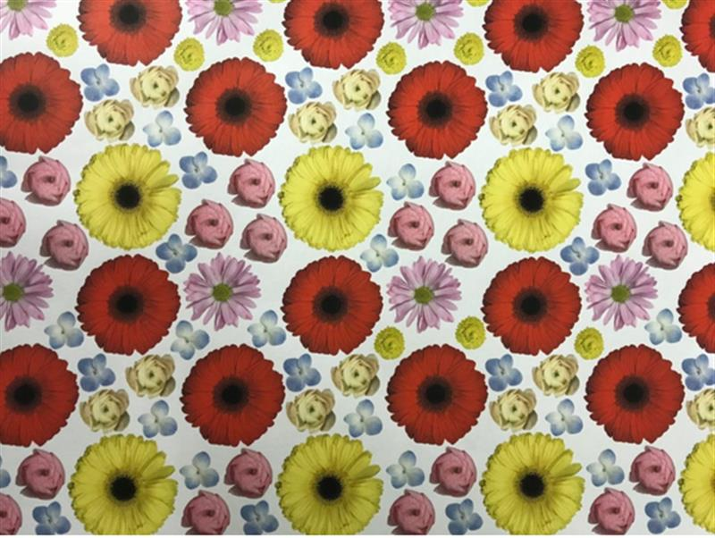
Making of Art-19 Box One, Kiki Smith’s Flowers in the Sky (2019). © Art-19 GmbH.
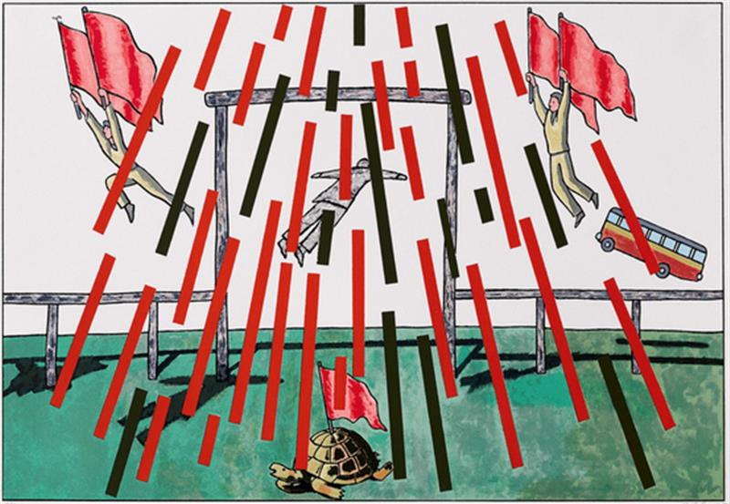
Ilya & Emilia Kabakov, We Are Free (2018). © Art-19 GmbH.
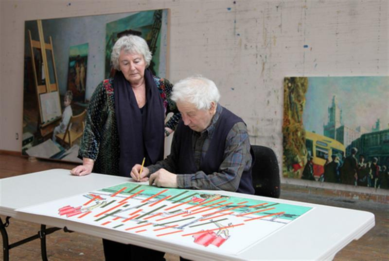
Making of Art-19 Box One, Ilya & Emilia Kabakov’s We Are Free (2018). © Art-19 GmbH.
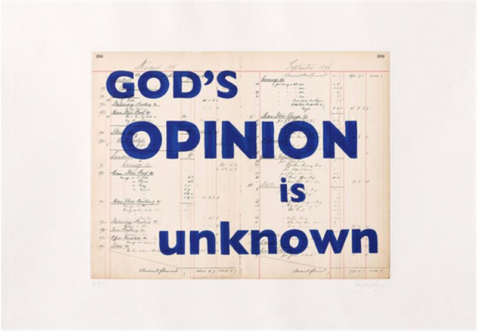
William Kentridge, God’s Opinion Is Unknown (2019). © Art-19 GmbH.
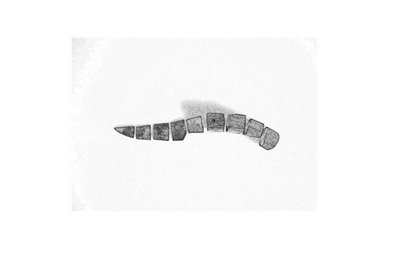
Shilpa Gupta, Untitled (2019). © Art-19 GmbH.
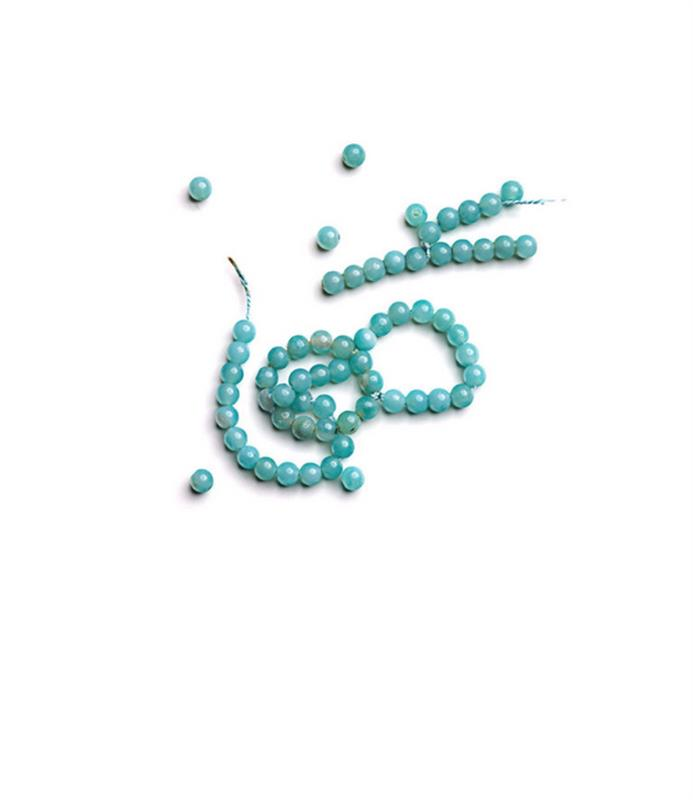
Ayşe Erkmen, <BBB/ Broken Blue Bracelet (2019). © Art-19 GmbH.
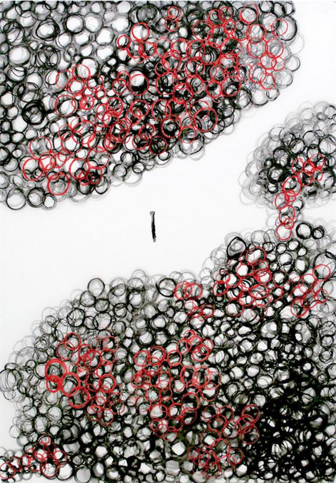
Chiharu Shiota, Being Human (2019). © Art-19 GmbH.
SOURCE: ARTNET NEWS